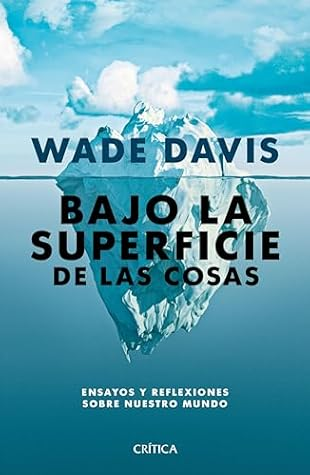

Bajo la superficie de las cosas (Spanish Edition)
Reseña por Jorge I. Zuluaga

Ver reseña en GoodReads (necesita cuenta)
Como seguro habrán leído en la contraportada o en la descripción del libro, "Bajo la superficie de las cosas" es una colección de artículos que Davis escribió, especialmente en los meses o años de la pandemia, para distintos medios de comunicación, tratando temas tan diversos como la historia de la segregación racial en los Estados Unidos, el conflicto palestino-israelí, la importancia de la antropología y reflexiones sobre la vida dirigidas a los jóvenes, entre otros.
No es que yo sea muy aficionado a este tipo de libros que las editoriales arman reuniendo escritos de un autor muy reconocido; ya me he llevado suficientes malas sorpresas con textos que prometían una unidad y terminaron siendo simplemente una colección de columnas de periódicos, pero les puedo asegurar, precisamente por no ser muy hincha de este género, que el caso de este libro es diferente.
En primer lugar, los artículos son mucho más largos que una simple columna de opinión. No sé si fueron publicados con la extensión que tienen aquí, pero ciertamente no es lo que estamos acostumbrados a leer en la mayoría de los periódicos, revistas o blogs. Algunos de los artículos podrían incluso funcionar como libros separados, como es el caso de "Esto es Estados Unidos" o "Coronar el Everest" (que se pronuncia íverest, como le aprendí a Davis en este libro).
Lo que más aprecio de Davis como autor es su honestidad intelectual. Yo sé que todos los humanos nos guardamos buena parte de lo que creemos o pensamos, incluso cuando nos explayamos en un libro y tenemos el privilegio de expresarnos, pero al leer a Davis tengo la sensación de que estoy ante un pensador honesto, que expresa lo que piensa y siente sin censurarse, y lo mejor es que lo que expresa, al menos desde mi punto de vista, es profundamente compatible con un futuro en el que cabemos todas las personas, toda la vida.
Otra cosa que no dejo de admirar en cada página leída suya es su habilidad como divulgador de la historia. Lo que pude leer en este libro y en "Magdalena", sobre la historia de distintos lugares del mundo y de Colombia en particular, me dejó esa sensación agradable de erudición histórica y, al mismo tiempo, de análisis que caracteriza a las mejores piezas de historiografía divulgativa que he leído. Me quito el sombrero ante Davis por esta otra capacidad suya que, creo, no se menciona mucho cuando se enumera su abultada lista de credenciales.
En suma: ¡Wade Davis lo volvió a hacer! ¡No dejen de leerlo!